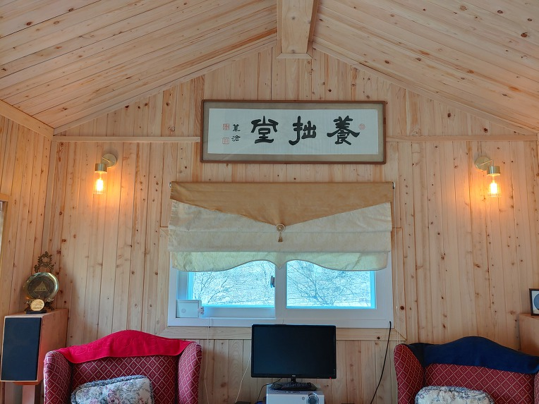

2017년 탄신 100주년을 기념하여 당시 한성백제박물관장 이셨던 누님이 주도하고 형님이 중재하고 하여 아버지 유품들 200여점을 강원대 박물관에 기증보존하게 되었다. 이중에는 근대 한중 고서화들을 비롯한 가치있는 예술품들이 포함되어 있다. 때마침 강원대학교는 창립 70주년 행사가 진행되고 있었기에 동상건립을 위시하여 모든일이 총장의 전적인 謝意와 환대하에 순조롭게 이루어 졌음은 천운이라 생각한다. (차후에 기증품 목록을 한번 올리도록 하겠음.)
아버지 유류품 기증목록을 정리하다가 화선지틈에 대수롭지않게 접혀져있던 위창(오세창)의 서필본을 발견하였다. 그 내용이나 서체보다는 거실에 걸어두면 보기좋을 것이라 여겨 누님께 건의하여 창암서원에 걸어두었는데, 이 글씨가 뜻밖에도 아래와 같은 (성리학) 의미인 것을 나중에 알개 되었다.
---------------------------
조선 전기 때 문신인 신개(申槩, 1374~1446) 양졸당(養拙堂)을 집 이름으로 삼았다.
선조 때 민유부(閔有孚, 1559~1594)는 '양졸당'을 자신의 호로 삼았다.
조선초기 문장가 권근: "졸(拙)이란 교(巧)의 반대이다. 임기응변에 능하고 교묘한 행동을 잘 하는 사람은 부끄러움이 없다고 했는데, 부끄러움이 없다는 것은 큰 병폐(病弊)라고 하지 않을 수 없다. 다른 사람은 이로움과 욕심을 즐겨 얻으려고 하지만 나는 부끄러움을 알아 의리를 지키는 것이 '졸(拙)'이요, 다른 사람은 속이기를 좋아해 교묘한 행동을 하지만 나는 부끄러움을 알아 진실을 지키는 것이 또한 '졸(拙)'이다.
조선후기 이서백(李瑞伯, 이협)이 선대(先代)의 집터에 초막을 짓고, 그곳에서 독서하며 '양졸당'이라 하니 글을 읽는 선비는 출세나 부귀영화를 좇아 자신을 공교롭게 하는 것이 아니라 오히려 '졸(拙)'을 길러 덕을 쌓아야 함이라 하더라. (출처네이버)
--------------------------------
살펴보건데 (유교적) 安分知足의 예(禮)를 앞세운다는 말인데 요즘 (자녀)교육철학과는 천지차라 격세지감이라 아니할 수 없다.
나 어리던 시절만 해도 부모께 올리는 서찰에 의당 '不肖小生(닮지못해 송구한)' 으로 시작하는 법이었고 어머니날 행사는 의례 '나실제 괴로움 다잊으시고 ~' 로 시작하였거늘 어찌 요즘은 역으로 부모됨을 감지덕지 하는 것인지...